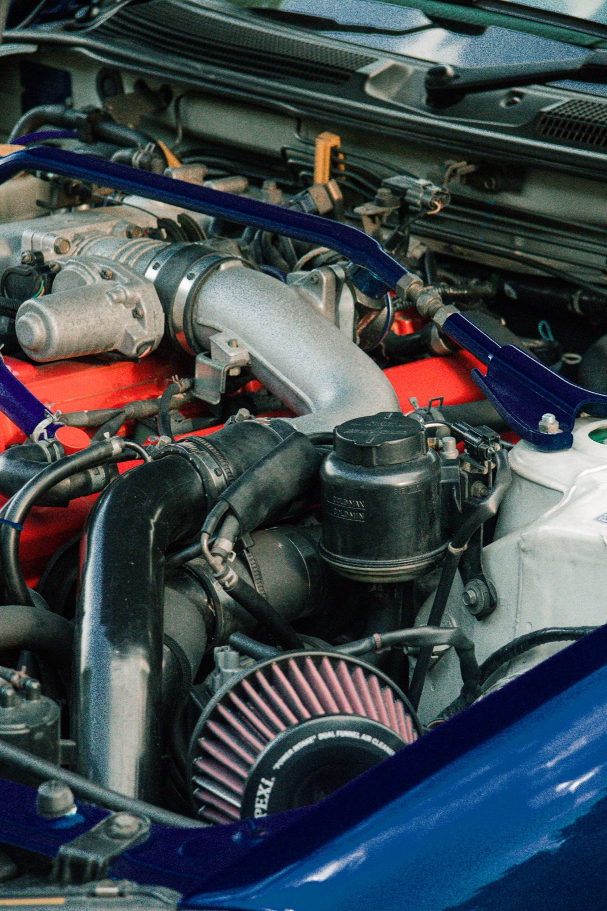
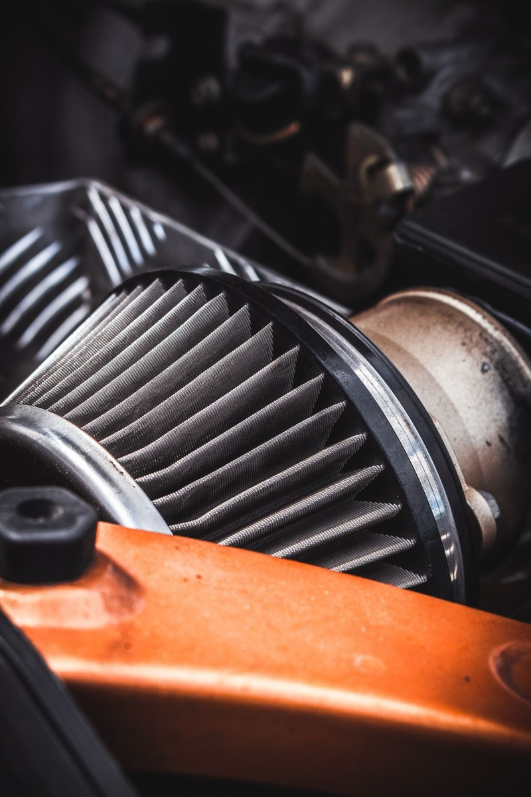
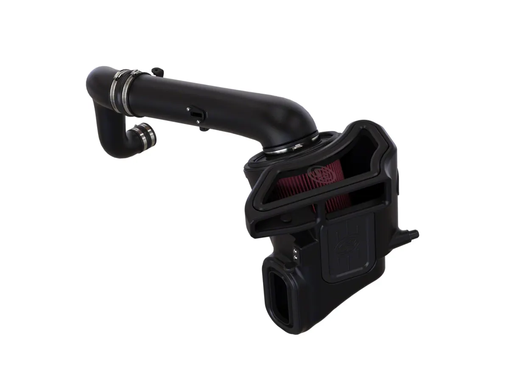

Cold Air Intake: What It Does, What It Doesn't, and the MAF Problem
This guide is about the mechanism itself, so it applies to any platform. The physics is the same on a turbo four, a V8, or a diesel; only the specific engine differs.

This guide is about the mechanism itself, so it applies to any platform. The physics is the same on a turbo four, a V8, or a diesel; only the specific engine differs.
What the factory airbox is for
An OEM airbox is an engineered compromise: filtration, noise reduction, water ingestion resistance, and cost. It is not designed to be maximally free-flowing, but it is usually better than the aftermarket implies. Modern turbo engines in particular have well-designed intake tracts.
An aftermarket intake changes one or more of these: filter surface area, intake tract length and diameter, and where the air is drawn from.
Where a real gain exists
1. Pre-turbo restriction. On a turbocharged engine, reducing restriction ahead of the compressor lets the turbo reach a given boost target with less work, which can improve spool response. This is a small but real effect, and it’s larger on a turbo than on a naturally aspirated engine.
2. Heat rejection. If the factory intake draws from a hot region, a sealed box drawing from a cooler source lowers intake air temperature. Lower IAT means the ECU can run more ignition advance without knock. On a forced-induction engine this matters more than on an NA one.
3. Sound. A genuine and legitimate change in character, particularly on turbo cars where the diverter valve and compressor sounds become audible. Many people buy for this reason alone, which is fine.

Where the gain doesn’t exist
The ECU is the limit. Adding airflow capacity does not change the ECU’s boost targets or fuel mapping. On a MAF-equipped engine, the ECU measures the air coming in and fuels it accordingly, so the engine holds its commanded power rather than making more. On a speed-density (MAP-based) engine, similar logic applies through different sensing.
The consequence: a bolt-on intake on a stock tune is mostly a sound modification. The exception is an intake specifically designed and calibrated with a tune, which is a different product sold as a package.

The MAF problem
This is the failure mode that costs people money.
Oiled filter media. Cotton-gauze filters are oiled to trap fine particles. Over-oiling, which is easy to do and widely done, sends oil mist downstream. That oil coats the MAF sensor’s heated element. The element’s job is to be cooled by airflow and report the cooling as mass air flow; a coating insulates it, so it under-reports airflow. Under-reported air means under-fuelled, which the ECU reads as a lean condition: rough idle, hesitation, and eventually a P0171/P0174 lean code.
The fix is cleaning, and the important part is what you clean it with. MAF cleaner is formulated to evaporate fully and not attack the sensor or its housing. Brake cleaner, carb cleaner, and especially anything with acetone or strong solvents will destroy the sensor. Never use them.
The prevention: oil the filter lightly, let it dry completely before reinstalling, and clean the MAF at every filter service.
Dry filter media. Dry filters avoid the oil problem entirely. They typically need cleaning more often and may filter slightly less finely, but for most people the trade is worth it.
Heat soak and “cold air” that isn’t
Half of what’s marketed as a cold air intake draws from inside the engine bay, which is the hottest air available once the car is warm and stationary. Symptoms you’d notice: strong performance when moving, flat response in traffic.
What to check before buying:
- Where does the filter draw from? Fender well or behind the grille is better than an open cone in the bay.
- Is the box sealed? A sealed box against the hood or a dedicated duct is what makes “cold air” real. An open element with a decorative heat shield does almost nothing.
- Does it retain the factory ducting? Many good intakes reuse the factory snorkel, which is already designed to draw from a cool, protected location.
Filtration and engine life
A more free-flowing filter generally filters less finely. On a street car doing 12,000 miles a year in dusty conditions, that difference compounds. The genuine high-performance answer is more filter area rather than a coarser filter. A large panel filter in the stock airbox often gives most of the flow benefit with better filtration than a small open cone.
What we recommend
On a stock or near-stock engine, fit a good drop-in panel filter in the factory airbox. It’s cheap, carries no MAF risk, keeps the factory cold-air path and gives a small real benefit. It is the most underrated option on this page.
If you want the sound, buy a sealed-box intake that draws from the factory location, and know that’s what you bought.
If you’re chasing power, fit an intake and tune it together on a platform where the intake is the actual restriction, with a high-flow downpipe behind it if the car is turbocharged. - Avoid: open-cone filters in the engine bay, over-oiled filters, and any product advertised with a horsepower claim and no dyno chart.
Bottom line
Intakes are one of the most oversold modifications in the aftermarket. They can be a good purchase for sound, and as part of a tuned package. They are rarely a good purchase as a standalone power modification. Buy one knowing which of those you’re doing, keep the filter properly oiled or use dry media, and clean the MAF.
Sealed boxes and dry filters, priced
Prices and review counts as the listings showed them on 4 November 2026. All three are sealed-box designs with dry media — the combination this article argues for — and all three are listed for the 2019–2026 half-ton.

AIRAID SynthaMax Dry Filter (19–26 2.7L Silverado 1500)
The cheapest dry-media option we found for this truck. Dry synthetic media removes the over-oiling failure mode entirely, which is the single most common way an intake damages the vehicle it is fitted to.
36 reviews is a modest base, and the complaints cluster around the moulding rather than the design. The same intake is listed once per vehicle, so those reviews sit on several pages; taken together, a one-star from September 2025 describes two units in a row arriving with pinholes in the intake pipe and a gap around the MAF boss, the second better but still leaking at the seams. Two further owners report a check engine light straight after fitting — "it made my check engine light come on" — though one of those attributes it to the 2.7L Turbomax rather than the intake. A three-star from May 2026 rates the torque noticeable and the airbox finish poor, and notes the 2.7L wants a MAF extension pigtail that isn't in the box.
None of that is a reason to avoid it — 89% of the ratings are four or five stars. It is a reason to open the box and inspect the pipe before you start, rather than after you've thrown the packaging away.
- Price
- $368.00
- Fitment
- 2019–2026, 2.7L Silverado 1500
- Filter
- SynthaMax — dry, no oiling
- Owner reviews
- 36
See the AIRAID intake → list price checked 4 Nov 2026

aFe Momentum GT, Pro DRY S, sealed box (19–26 2.7L Silverado 1500)
A genuinely sealed housing rather than an open cone with a shield bolted nearby, which is the distinction this article keeps returning to: a sealed box drawing from the factory fender location does not breathe hot engine-bay air in traffic. Dry filter, so no oiling ritual and no MAF contamination risk.
The 436 reviews are pooled across every truck this housing is listed for — 2.7L and 3.0L Duramax Silverados, Sierras, F-150s, Colorados — so read them as evidence about the housing rather than about this engine. Read that way they are consistent, and they are specific. Owners repeatedly report no measurable gain: "I haven't noticed anything, still sounds the same and still feels the same. No gas mileage increase or anything, kind of a let down for an intake that cost $400 plus." One 6.6L owner is blunter, and one Ranger owner found it simply does not fit the 2025+ truck. The one complaint worth acting on before you buy: a June 2026 review reports failing a smog test because the kit carried no CARB exemption for a 2017-and-up Silverado. That is one owner's account, not a ruling on the kit — the listing states no EO number either way. But if you are in a state that inspects, confirm the exemption for your model year before ordering. It is a $435 mistake you can avoid with a phone call.
- Price
- $435.00
- Fitment
- 2019–2026, 2.7L Silverado 1500
- Filter
- Pro DRY S — dry, no oiling
- Housing
- Sealed box
- Owner reviews
- 436
See the aFe Momentum GT → list price checked 4 Nov 2026

S&B with Dry Extendable Filter (19–26 2.7L Silverado 1500)
The most-reviewed intake that fits this engine, with dry media. Mid price between the other two. On the numbers it is the safest bet here: 2,798 ratings at 4.8, with 86% of owners giving it five stars.
The caveat is worth more than the number. Those 2,798 ratings are pooled across every vehicle S&B lists this filter for — Powerstroke, Duramax, EcoBoost, RAM, F-150 — and the low ones are not random. Two separate one-star reviews describe the same failure, holes that will not line up to bolt the airbox down. One is titled "Junk." and reads "Holes do not line up to bolt air box down... s and b have sent me 3 now and none are correct." The other is headed "Terrible QC" and says "Literally nothing about this intake fits, bolts don’t line up, holes don’t line up, just bad." Two more report the wrong parts in the kit, and one 2026 owner had to warm the lid plastic to get it to seat at all — something the instructions do not mention.
That is a fitment-and-moulding pattern, not a design flaw, and it is a minority of a very large sample. But "bolt it up cleanly" is exactly what those owners say it did not do, so buy it expecting to be one of the 86% and keep the packaging until it is seated.
- Price
- $399.00
- Fitment
- 2019–2026, 2.7L Silverado 1500
- Filter
- Dry extendable — no oiling
- Owner reviews
- 500+
See the S&B intake → list price checked 4 Nov 2026
None of these three listings states a CARB executive order number. Absence of a claim is not proof of illegality, but if your state inspects, confirm exemption with the manufacturer before ordering rather than assuming it.
No horsepower figure appears on this page, for the reason set out above: no dyno sheet accompanies these listings and we ran no test of our own. The star distributions above are from each listing's own rating summary. Dry media is stated by each listing, and sealed-box construction is stated by aFe; we did not open one to verify it.
Topics
- Engine & Intake
- aFe
- AIRAID
- S&B
- Silverado 1500
- F-150
- Duramax
- TurboMax